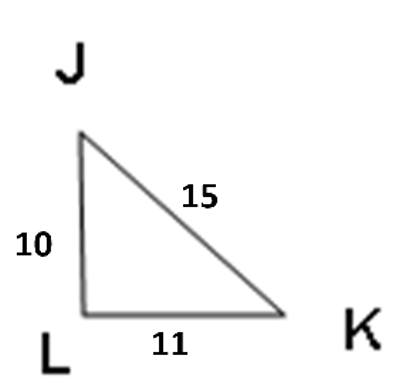

← Retour au choix des chapitres
Chapitre 4: Théorème de Pythagore partie 2
Notion de réciproque
Partons du français
En mathématiques on parle souvent de théorème, de réciproque, et des fois de contraposée... Mais il est parfois difficile de comprendre quand utiliser quoi et comment.
Exemple : Roméo aime Juliette et Juliette aime Roméo, c'est réciproque.
Cela signifie que ça fonctionne dans les deux sens.
Construction grammaticale de la réciproque
Phrase conditionnelle : Si il pleut, alors j'ouvre mon parapluie.
La réciproque sera donc : Si j'ouvre mon parapluie, alors il pleut. (Ce qui est totalement faux, mais c'est la réciproque)
À partir d'une phrase conditionnelle (avec un Si condition alors conséquence), on peut toujours construire une réciproque (après elle n'est pas toujours vraie).
Pour construire une réciproque il faut échanger condition et conséquence.
Contraposée
Ce mot fait penser à contraire... La contraposée sera le contraire de la réciproque.
Phrase conditionnelle : Si il pleut, alors j'ouvre mon parapluie
Réciproque : Si j'ouvre mon parapluie, alors il pleut
Si je réécrit cette phrase en mode négatif, j'ai :
Contraposée : Si je n'ouvre pas mon parapluie, alors il ne pleut pas. (C'est faux dans ce cas aussi, mais c'est la contraposée)
Oui mais en maths du coup ?
En maths, toute propriété qui est donnée en cours est vraie.
On peut toujours construire la propriété réciproque mais elle n'est pas toujours vraie.
Par contre la propriété contraposée elle est toujours vraie (si la propriété est vraie).
Exemple avec un quadrilatère :
Propriété : Si un quadrilatère est un carré, alors ses diagonales sont de même longueur.
Réciproque : Si les diagonales d'un quadrilatère sont de même longueur, alors c'est un carré. (FAUX ! Un rectangle a aussi des diagonales de même longueur)
Contraposée : Si les diagonales d'un quadrilatère ne sont pas de même longueur, alors ce n'est pas un carré. (VRAI !)
Réciproque du théorème de Pythagore
Réciproque du théorème de Pythagore :
Si dans un triangle ABC, AB² + AC² = BC², alors ce triangle est rectangle en A.
On utilise la réciproque du théorème de Pythagore pour montrer qu'un triangle est rectangle.
Exemple :
Soit ABC un triangle tel que AB = 5,2 cm, AC = 3,9 cm et BC = 6,5 cm.
Ce triangle est-il rectangle ?
Résolution :

Dans le triangle ABC le côté le plus long est [BC].
D'une part, BC² = 6,5² = 42,25
D'autre part, AB² + AC² = 5,2² + 3,9² = 27,04 + 15,21 = 42,25
Ainsi AB² + AC² = BC², d'après la réciproque du théorème de Pythagore, le triangle ABC est rectangle en A.
Contraposée du théorème de Pythagore
Contraposée du théorème de Pythagore :
Si dans un triangle ABC (avec BC comme plus grand côté), AB² + AC² ≠ BC², alors ce triangle n'est pas rectangle.
On utilise la contraposée du théorème de Pythagore pour montrer qu'un triangle n'est pas rectangle.
Exemple :
Soit JKL un triangle tel que JK = 15 cm, KL = 11 cm et LJ = 10 cm.
Ce triangle est-il rectangle ?
Résolution :

Dans le triangle JKL, le côté le plus long est [JK].
D'une part, JK² = 15² = 225
D'autre part, KL² + LJ² = 11² + 10² = 121 + 100 = 221
Ainsi KL² + LJ² ≠ JK², d'après la contraposée du théorème de Pythagore, le triangle JKL n'est pas rectangle.